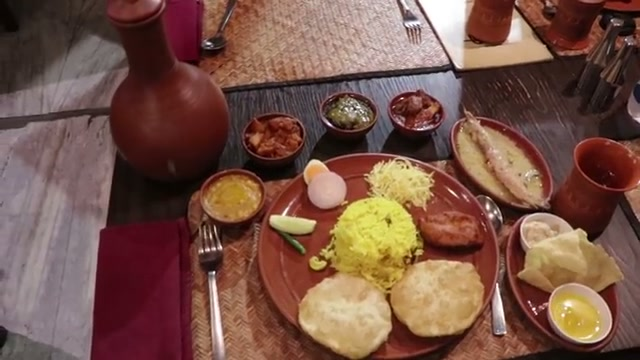
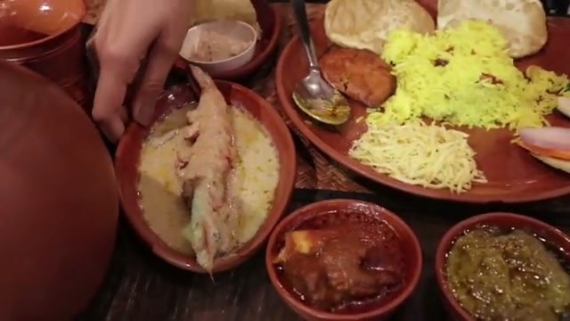
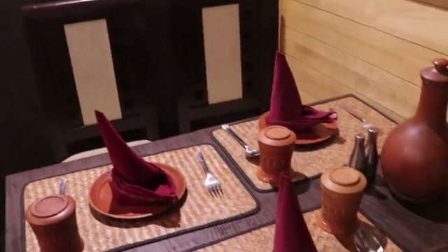
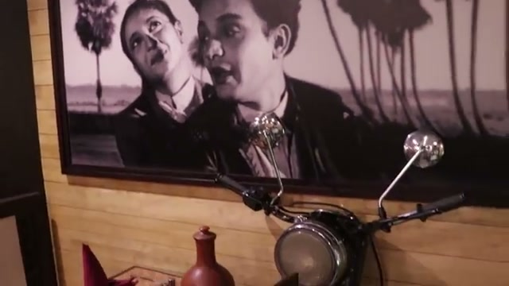
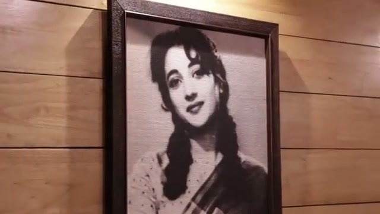
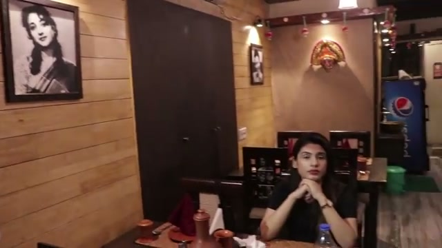

Where Cinema Nostalgia Meets Haute Bengali Cuisine
Step into vintage Calcutta. Immortalized through black & white memorabilia, classic cinema dialogues, and artisanal recipes curated by culinary maestro Chef Ranjan Biswas.
Kacha Lanka Mangsho, Chingri Malaikari & Gondhoraj Bhetki
Every dish is an homage to historic Bengali banquets. Fresh Bengal bay prawns bathed in tender coconut cream, and heritage mutton slow-braised with green chilies in brass degchis.
Traditional Bengali Pre-Wedding Feasts in Ballygunge
Customized 14-item Kansa thali spreads, traditional conch blowing welcome, floral table decor, and private dining salon for family gatherings.
Reserve your table on Southern Avenue directly through WhatsApp with priority chef tasting menu recommendations.
Signature recipes that have won the hearts of food connoisseurs across Kolkata.

Jumbo freshwater prawns poached in a luscious, delicately spiced coconut milk gravy infused with whole cardamom and pure ghee.

Tender mutton slow-cooked with fresh green chili paste, aromatic coriander, and light spices — spicy, fragrant, and unforgettable.

Framed vintage posters of Uttam Kumar and Suchitra Sen, gentle acoustic melodies, and polished teakwood dining tables overlooking Southern Avenue.



Opposite Vivekananda Park on Southern Avenue, Ballygunge. Minutes from Golpark and Gariahat.
Founders & Directors · Saptapadi Restaurant
The Performance Diagnosis: Saptapadi's existing Wix website takes over 5.4 seconds to load on mobile devices in Kolkata. In modern mobile hospitality, 40%+ of hungry diners abandon websites that take longer than 3 seconds.
We engineered this bespoke, sub-second GSAP virtual experience celebrating your cinema nostalgia aesthetic, featuring direct WhatsApp table reservations and pre-order menus that convert diners instantly.
We can deploy this exact interactive platform on your domain within 48 hours for a flat one-time setup of ₹24,000 ($299), including 5 custom 60fps video reels.